Trình chỉnh sửa script
Giới thiệu
Trình chỉnh sửa script của Godot Engine là một trình soạn thảo văn bản mạnh mẽ và tích hợp hoàn toàn, không chỉ giúp đơn giản hóa quá trình viết và debug code GDScript mà còn cho phép làm việc với các file văn bản thuần, mang lại cho lập trình viên một môi trường liền mạch để viết logic và hành vi của game. Nó có thể tô sáng code, tự động thụt lề, kiểm tra cú pháp và nhiều hơn thế. Bạn cũng có thể tạo breakpoint để debug dự án mà không cần chuyển sang cửa sổ khác. Trình soạn thảo văn bản cũng đóng vai trò trình xem tài liệu tham khảo lớp offline, có thể truy cập theo nhiều cách như mô tả trong Tài liệu tham khảo lớp tích hợp.
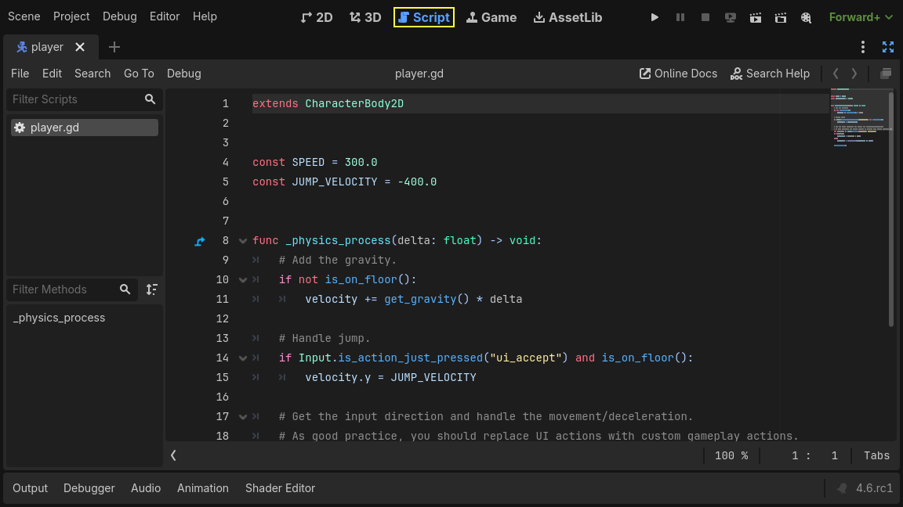
Tính năng
Một số tính năng chính của trình soạn thảo văn bản được liệt kê dưới đây:
Trình soạn thảo code tích hợp hoàn toàn cho GDScript.
Hỗ trợ tô sáng cú pháp cho các file GDScript và JSON.
Kiểm tra cú pháp cho các file GDScript và JSON.
Hỗ trợ bookmark và breakpoint.
Tự động thụt lề.
Thu gọn code.
Giao diện (theme) có thể tùy biến.
Nhiều con trỏ (caret), có thể bật bằng Alt + Left Click.
Tự động hoàn thành biến, hàm, hằng số, v.v.
Refactor ký hiệu ngay tại chỗ bằng cách chọn chúng và dùng Ctrl + D.
Tìm và thay thế hàng loạt trên các file của dự án.
Cách dùng
Nếu bạn dùng GDScript trong dự án, trình soạn thảo văn bản tích hợp sẵn trong Godot cung cấp mọi thứ bạn cần, là nơi tập trung tất cả để tận dụng tối đa Godot Engine. Gần như mọi tham số có thể điều chỉnh qua giao diện người dùng cũng có thể được sửa trực tiếp bằng code.
Ghi chú
Nếu bạn muốn dùng trình soạn thảo văn bản bên ngoài hoặc muốn dùng C# trong dự án, xem Sử dụng trình soạn thảo văn bản bên ngoài và Cấu hình trình chỉnh sửa bên ngoài.
Mẹo
Giống nhiều phần khác trong giao diện Godot, trình soạn thảo văn bản cũng có thể được tùy biến bằng cách thay đổi cài đặt theo ý thích. Bạn có thể truy cập các cài đặt này bằng cách mở Editor > Editor Settings và vào nhóm Text Editor.
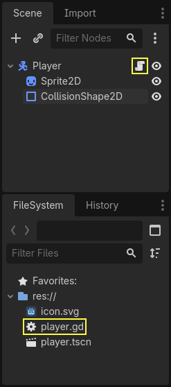
Bạn có thể mở Script Editor bằng nút Script trong bộ chọn không gian làm việc, nằm ở giữa phía trên giao diện Godot. Ngoài ra, bạn có thể dùng nút Open Script cạnh một node trong Scene Tree dock, hoặc nhấp đúp vào một file .gd hay một file văn bản được nhận diện trong FileSystem dock để mở trực tiếp trong Script Editor.
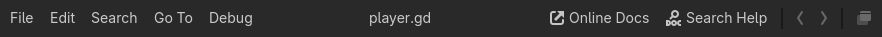
Khi đã mở, bạn sẽ thấy các menu của trình soạn thảo văn bản ở phía trên, bên dưới bộ chuyển scene. Cạnh các menu là các nút để mở tài liệu trực tuyến hoặc tìm kiếm trong tài liệu tham khảo lớp tích hợp sẵn. Bên phải các nút này là hai mũi tên điều hướng cho phép bạn di chuyển qua lịch sử xem. Cuối cùng, bạn có thể dùng nút float để tách trình soạn thảo văn bản ra khỏi cửa sổ Godot, rất hữu ích nếu bạn làm việc với nhiều màn hình.
Bên dưới các menu ở bên trái, bạn sẽ thấy script panel. Ở giữa, cạnh script panel, là vùng viết code. Bên dưới vùng viết code là thanh trạng thái, hiển thị số lỗi và cảnh báo trong code. Nhấp vào biểu tượng lỗi hoặc cảnh báo sẽ hiển thị danh sách lỗi kèm số dòng. Nhấp vào một mục sẽ nhảy đến dòng đó. Bạn cũng có thể chọn bỏ qua cảnh báo bằng cách mở danh sách và nhấp Ignore. Thanh trạng thái cũng cho phép bạn thay đổi mức zoom của code bằng cách nhấp vào giá trị phần trăm. Bạn cũng có thể dùng Ctrl + Mouse Wheel (Cmd + Mouse Wheel trên Mac) để đạt hiệu quả tương tự. Thanh trạng thái cũng hiển thị vị trí hiện tại của con trỏ theo dòng và cột, và việc thụt lề đang dùng tab hay dấu cách.
Nhiều thao tác trong trình soạn thảo văn bản cũng có thể được thực hiện bằng phím tắt. Các thao tác hiển thị phím tắt tương ứng bên cạnh. Ngay trong Godot, bạn có thể tìm và gán lại mọi phím tắt bằng cách vào .
Trong các phần tiếp theo, chúng ta sẽ đi qua các khía cạnh khác nhau của trình soạn thảo văn bản. Bạn cũng có thể chọn một phần bên dưới để nhảy đến một chủ đề cụ thể:
Script Panel
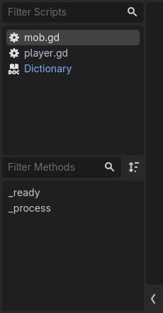
Bên dưới các menu, ở panel bên trái, bạn sẽ thấy danh sách các file và trang tài liệu đang mở. Tùy theo loại file, danh sách này sẽ có một biểu tượng cạnh tên file. Ví dụ, biểu tượng nghĩa là đó là một GDScript. nghĩa là đó là một script C#. nghĩa là đây là tài liệu tham khảo lớp tích hợp sẵn. Cuối cùng, nghĩa là đó là một script đang chạy (xem annotation tool để biết thêm). Di chuột lên một file sẽ hiển thị tooltip với vị trí tương đối của nó trong thư mục dự án.
Trên thanh trạng thái, nhấp vào mũi tên trái sẽ ẩn script panel, nhấp vào mũi tên phải sẽ hiện nó.
Nếu bạn chưa thay đổi cài đặt nào, tên các file cũng có thể có màu khác nhau. Điều này giúp bạn nhận ra các file vừa chỉnh sửa gần đây bằng cách làm nổi bật chúng. Bạn có thể thay đổi hành vi này trong Editor > Editor Settings bằng cách điều chỉnh các thuộc tính Script Temperature trong mục Text Editor.
Thanh lọc phía trên tên các file cung cấp tính năng tìm kiếm không phân biệt hoa thường tiện lợi để tìm một file cụ thể. Ngay cả khi bạn chỉ gõ các chữ cái của tên file vào thanh, các file chứa những chữ cái này theo đúng thứ tự cũng sẽ xuất hiện. Giả sử có một file tên button.gd trong danh sách. Nếu bạn gõ btn vào thanh lọc, file này sẽ xuất hiện trong kết quả. Để đặt lại bộ lọc, hãy xóa nội dung thanh lọc.
Dấu sao (*) cạnh tên file cho biết file đó có thay đổi chưa được lưu.
Mẹo
Nếu bạn chỉ nhập "*" vào thanh lọc, bạn có thể hiển thị tất cả các file chưa lưu.
Bạn có thể kéo một file để thay đổi thứ tự. Nhấp chuột giữa vào một file sẽ đóng nó. Nhấp chuột phải vào một file sẽ cung cấp một số tùy chọn để lưu hoặc đóng file, hoặc sao chép đường dẫn tương đối của file. Trong menu này:
Bạn cũng có thể dùng Move Up và Move Down để thay đổi thứ tự file, hoặc dùng Sort để sắp xếp tất cả file theo bảng chữ cái. Toggle Files Panel ẩn panel, có thể hiển thị lại bằng mũi tên phải trên thanh trạng thái. Close Docs đóng tất cả tài liệu tham khảo lớp đang mở, chỉ để lại các file script. Show in FileSystem tìm và làm nổi bật file trong FileSystem dock.
Bên dưới danh sách file, bạn sẽ thấy tên của file đang mở. Nút bên cạnh dùng để chuyển thứ tự các phương thức định nghĩa trong file này giữa theo bảng chữ cái và theo thứ tự xuất hiện. Bên dưới là phần outline của file. Nếu đây là file script, nó sẽ chứa danh sách các phương thức đã định nghĩa. Còn nếu một trang tài liệu tham khảo lớp đang mở, vùng này sẽ hiển thị mục lục của tài liệu đó. Nhấp vào một mục trong danh sách này sẽ nhảy đến hàm hoặc phần tương ứng trong file. Tương tự, thanh Filter Methods cho phép bạn tìm một hàm hoặc phần cụ thể trong tài liệu đang chọn, với cách hoạt động giống như lọc script.
Menu
Các menu của trình soạn thảo văn bản nằm bên dưới bộ chuyển scene và cho phép bạn truy cập nhiều công cụ và tùy chọn, như quản lý file, tìm và thay thế, điều khiển debug và các tính năng định dạng code.
Mẹo
Dấu sao (*) cạnh một thao tác nghĩa là thao tác này cũng có trong menu ngữ cảnh, mở được bằng cách nhấp chuột phải trong trình soạn thảo code.

Menu File cung cấp các tùy chọn sau:
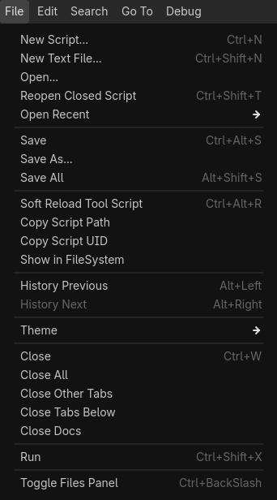
New Script...: Mở hộp thoại tạo script mới để tạo và thêm script vào dự án. Nếu tạo thành công, script sẽ được mở trực tiếp trong trình soạn thảo văn bản. Tùy theo phiên bản Godot (có hỗ trợ C# hay không), bạn có thể chọn phần mở rộng
.gdhoặc.cs.New Text File...: Mở hộp thoại tệp để tạo một tệp văn bản thuần với một trong các định dạng được hỗ trợ. Godot cũng có thể tô sáng cú pháp cho tệp
json.Open...: Mở hộp thoại tệp để bạn duyệt trong máy tính và chọn bất kỳ tệp văn bản được hỗ trợ nào để mở.
Reopen Closed Script: Mở lại các script vừa đóng gần nhất. Bạn có thể dùng tùy chọn này nhiều lần để mở lại các script đã đóng khác nếu bạn đã đóng nhiều hơn một script.
Open Recent: Hiển thị danh sách các script được mở gần đây. Bạn cũng có thể xóa danh sách bằng tùy chọn ở cuối danh sách.
Save: Lưu script đang được chọn.
Save As...: Mở hộp thoại tệp để lưu script đang mở với một tên khác.
Save All: Lưu tất cả các script đang mở chưa được lưu trong trình soạn thảo văn bản. Các script có thay đổi chưa lưu sẽ có dấu hoa thị (*) bên cạnh tên trong danh sách script.
Soft Reload Tool Script: Nếu script được chọn là một tool, tùy chọn này sẽ tải lại script để thực thi nó lần nữa.
Copy Script Path: Sao chép đường dẫn tương đối trong dự án của script đang được chọn, sử dụng tiền tố
res://.Show in FileSystem: Tìm và làm nổi bật tệp được chọn trong FileSystem dock.
History Previous: Chuyển script đang hoạt động sang script đã được mở trước đó. Tính năng này hữu ích khi bạn mở nhiều script và muốn nhanh chóng quay lại script vừa chỉnh sửa. Nếu bạn cũng đã di chuyển con trỏ (caret) hơn 10 dòng, trước tiên con trỏ sẽ được đưa về vị trí trước đó trong cùng tệp.
History Next: Sau khi dùng History Previous để quay lại một script trước đó, tính năng này cho phép bạn đi tiếp trong lịch sử script, chuyển sang các script đã truy cập trước đó. Tương tự như trên, nếu bạn cũng đã di chuyển con trỏ (caret) hơn 10 dòng, trước tiên con trỏ sẽ được đưa đến vị trí tiếp theo trong cùng tệp.
Theme: Cung cấp các tùy chọn để import một theme có sẵn, lưu hoặc tải lại theme. Việc thay đổi cài đặt theme được thực hiện qua Editor Settings.
Close: Đóng script đang hoạt động.
Close All: Đóng tất cả các script đang mở và nhắc lưu nếu có thay đổi chưa lưu.
Close Other Tabs: Đóng tất cả các script đang mở trừ script được chọn.
Close Docs: Đóng các trang tài liệu tham chiếu lớp, chỉ giữ lại các script.
Run: Nếu script kế thừa EditorScript và được thiết kế để thực thi mà không cần chạy dự án, tùy chọn này sẽ chạy script đó. Xem Chạy script một lần bằng EditorScript để biết thêm.
Toggle Files Panel: Hiện hoặc ẩn bảng script nằm ở bên trái trình soạn thảo văn bản, cho phép bạn mở rộng vùng viết code. Thông tin thêm về Scripts Panel đã được giải thích ở trên.
Menu Edit cung cấp một số tùy chọn để thao tác với dòng:
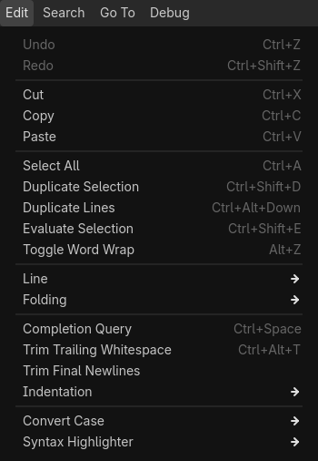
Undo*: Cho phép bạn hoàn tác hành động hoặc chuỗi hành động gần nhất, đưa tài liệu hoặc code về trạng thái trước khi thay đổi.
Redo*: Cho phép bạn thực hiện lại một hành động đã bị hoàn tác, tức là làm lại hành động cuối cùng đã bị chức năng Undo đảo ngược.
Cut*: Cắt vùng chọn vào clipboard.
Copy*: Sao chép vùng chọn vào clipboard.
Paste*: Dán nội dung của clipboard nếu nó chứa văn bản.
Select All*: Chọn toàn bộ code trong trình soạn thảo văn bản.
Duplicate Selection: Sao chép vùng chọn và chèn nó ngay sau vùng chọn.
Duplicate Lines: Nhân bản dòng hiện tại và thêm nó thành một dòng mới bên dưới dòng hiện tại.
Evaluate Selection*: Tính giá trị của văn bản được chọn nếu nó chỉ chứa (only) một biểu thức toán học, chẳng hạn
83 * 3hoặcpow(2,3).Toggle Word Wrap: Tắt thanh cuộn ngang bằng cách ngắt các dòng dài xuống dòng tiếp theo. Lưu ý rằng đây chỉ là thay đổi về hiển thị, không có ký tự xuống dòng mới nào được thêm vào.
Line: Cung cấp một tập hợp thao tác với dòng. Tùy vào tệp đang mở, các tùy chọn này cũng có thể nằm trực tiếp trong menu Edit thay vì trong một menu con.
Move Up: Di chuyển dòng hiện tại hoặc (các) dòng được chọn lên một dòng.
Move Down: Di chuyển dòng hiện tại hoặc (các) dòng được chọn xuống một dòng.
Indent*: Thụt lề văn bản từ vị trí con trỏ hoặc (các) dòng được chọn, theo cài đặt thụt lề.
Unindent*: Bỏ thụt lề văn bản từ vị trí con trỏ hoặc (các) dòng được chọn, theo cài đặt thụt lề.
Delete Line: Xóa dòng hiện tại hoặc (các) dòng được chọn.
Toggle Comment*: Chú thích hoặc bỏ chú thích dòng hiện tại hoặc (các) dòng được chọn. Bạn cũng có thể thực hiện thao tác này bằng cách chọn (các) dòng, nhấp chuột phải vào văn bản đã chọn và chọn cùng hành động đó.
Folding: Cung cấp một tập hợp tùy chọn thu gọn cho văn bản được chọn. Tùy vào tệp đang mở, các tùy chọn này cũng có thể nằm trực tiếp trong menu Edit thay vì trong một menu con.
Fold/Unfold Line*: Nếu dòng hiện tại có một khối code hoặc vùng code (code region) bên dưới, tùy chọn này sẽ ẩn khối đó bằng cách thu gọn các dòng. Sau đó bạn có thể mở rộng lại bằng chính tùy chọn này, bằng mũi tên ">" cạnh số dòng trong vùng viết code, hoặc nhấp vào biểu tượng dấu ba chấm "..." ở cuối dòng đã thu gọn.
Fold All Lines: Thu gọn tất cả các khối code hoặc vùng code trong tài liệu đang mở.
Unfold All Lines: Mở rộng tất cả các khối code và vùng code trong tài liệu đang mở.
Create Code Region*: Bao văn bản được chọn trong một vùng code có thể thu gọn để giúp các script lớn dễ đọc hơn. Xem Vùng mã để biết thêm.
Completion Query: Gợi ý từ các ký hiệu có sẵn hoặc do người dùng tạo để tự động hoàn thành đoạn code đang viết dở. Các phím mũi tên Up và Down dùng để di chuyển lên xuống, nhấn Enter hoặc Tab để chấp nhận và thêm ký hiệu đang được làm nổi bật vào code. Tab cũng sẽ thay thế văn bản hiện có ở bên phải con trỏ.
Trim Trailing Whitespaces: Xóa khoảng trắng thừa ở cuối mỗi dòng trong tệp.
Trim Final Newlines: Xóa các dòng trống thừa ở cuối tệp.
Indentation: Cung cấp các tùy chọn thụt lề cho tệp đang mở. Tùy vào tệp đang mở, các tùy chọn này cũng có thể nằm trực tiếp trong menu Edit thay vì trong một menu con.
Convert Indent to Spaces: Chuyển toàn bộ thụt lề trong tệp sang dấu cách.
Convert Indent to Tabs: Chuyển toàn bộ thụt lề trong tệp sang ký tự tab.
Auto Indent: Chuyển đổi thụt lề của các dòng được chọn (hoặc toàn bộ tệp) theo cài đặt thụt lề.
Convert Case: Đổi kiểu chữ của văn bản được chọn thành Upper Case*, Lower Case*, hoặc viết hoa chữ cái đầu của mỗi từ.
Syntax Highlighter: Cho phép bạn chọn bộ tô sáng cú pháp.
Plain Text: Tắt tô sáng cú pháp.
Standard: Tô sáng mặc định cho các script C#.
JSON: Tô sáng cú pháp cho tệp JSON.
GDScript: Tô sáng cú pháp cho tệp GDScript.
Menu Search cung cấp các tùy chọn sau:
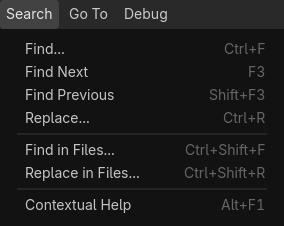
Find...: Mở thanh tìm kiếm nhanh bên dưới thanh trạng thái để tìm văn bản trong tệp đang mở. Bạn có thể chuyển đến kết quả tiếp theo và kết quả trước đó lần lượt bằng mũi tên xuống và mũi tên lên. Bật Match Case để tìm kiếm phân biệt chữ hoa chữ thường. Bật Whole Words nghĩa là văn bản không được có chữ cái hoặc chữ số nào đứng cạnh, chỉ có ký hiệu và khoảng trắng.
Find Next: Tương tự mũi tên xuống, hiển thị kết quả xuất hiện tiếp theo.
Find Previous: Tương tự mũi tên lên, hiển thị kết quả xuất hiện trước đó.
Replace...: Mở thanh tìm và thay thế bên dưới thanh trạng thái để tìm văn bản và thay thế nó trong tệp đang mở. Bạn có thể chọn thay thế từng kết quả một hoặc thay thế tất cả cùng lúc. Ngoài ra, bạn có thể giới hạn việc thay thế trong phạm vi văn bản được chọn bằng cách bật hộp kiểm Selection Only trên thanh tìm và thay thế. Bạn cũng có thể dùng Ctrl + D để chọn thêm lần xuất hiện tiếp theo của văn bản đang được chọn, cho phép bạn thay thế trực tiếp nhiều lần xuất hiện cùng lúc.
Find in Files...: Mở một cửa sổ để tìm văn bản trong các tệp thuộc thư mục dự án. Chọn "Find..." sẽ bắt đầu tìm từ thư mục đã chọn và bao gồm các phần mở rộng tệp được đánh dấu trong bộ lọc. Kết quả được hiển thị ở bảng dưới cùng, trong tab Search Results, kèm số kết quả khớp và tổng số tệp tìm thấy. Nhấp vào một kết quả sẽ mở tệp và nhảy đến dòng tương ứng.
Replace in Files...: Mở một cửa sổ để tìm và thay thế văn bản bằng văn bản khác trong các tệp tìm thấy thuộc thư mục dự án. Sau khi nhấp Replace..., bạn có thể chọn những tệp cần thay thế trong tab Search Results ở bảng dưới cùng bằng cách đánh dấu (hoặc bỏ đánh dấu) chúng và dùng nút Replace All.
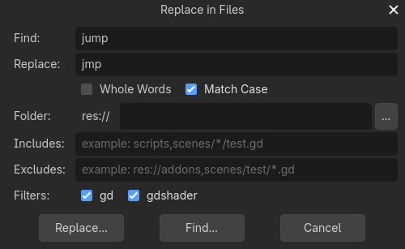
Cảnh báo
Lưu ý rằng thao tác "Replace in Files" không thể hoàn tác!
Mẹo
Cả hai cửa sổ Find in Files và Replace in Files đều có chung các nút Search... và Replace.... Điểm khác biệt duy nhất ở cửa sổ thứ hai là có thêm một trường văn bản, trường này sẽ tự động được điền vào bảng kết quả tìm kiếm khi nhấp nút Replace.... Thao tác thay thế chỉ được thực hiện khi bạn nhấp nút Replace All trong bảng dưới cùng này, nhờ đó bạn vẫn có thể sửa từ cần thay thế sau đó ngay trong bảng này.
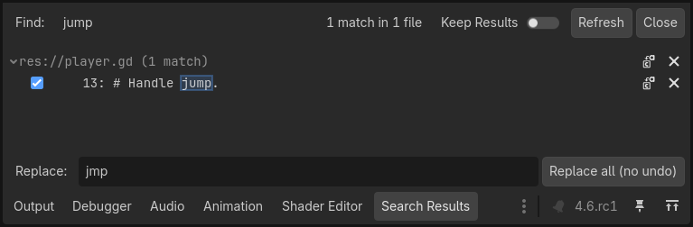
Contextual Help*: Mở danh sách tài liệu tham chiếu lớp có sẵn, tương tự như nhấn F1 trên một ký hiệu, hoặc chọn Lookup Symbol từ menu ngữ cảnh.
Menu Go To giúp bạn di chuyển trong code dễ dàng với các tùy chọn sau:
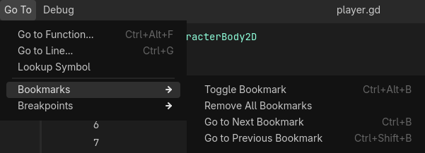
Go to Function...: Mở danh sách hàm để nhảy đến. Bạn cũng có thể đạt được kết quả tương tự bằng cách gõ vào thanh lọc phương thức trong bảng script.
Go to Line...: Nhảy đến số dòng đã nhập trong trình soạn thảo code.
Bookmarks: Chứa các hành động cho tính năng đánh dấu (bookmark), giúp bạn dễ dàng định hướng trong code hơn, chẳng hạn để tìm một đoạn chưa hoàn thiện. Các dòng được đánh dấu sẽ có biểu tượng bookmark màu xanh ở bên trái số dòng.
Toggle Bookmark*: Thêm hoặc xóa bookmark trên dòng chứa con trỏ. Bạn cũng có thể nhấp chuột phải vào một dòng để làm việc này.
Remove All Bookmarks: Xóa tất cả bookmark trong tài liệu đang mở.
Go to Next Bookmark: Nhảy đến bookmark tiếp theo trong tài liệu đang mở.
Go to Previous Bookmark: Nhảy đến bookmark trước đó trong tài liệu đang mở.
Menu Bookmarks cũng sẽ chứa danh sách các dòng đã được đánh dấu, bao gồm số dòng và một phần nội dung của dòng đó.
Breakpoints: Breakpoint rất hữu ích khi gỡ lỗi code. Tương tự menu Bookmarks, menu này cho phép bạn thêm hoặc xóa breakpoint, di chuyển giữa chúng và nhảy trực tiếp đến một breakpoint cụ thể. Một cách dễ dàng để thêm breakpoint là di chuột qua vùng trống bên trái số dòng. Một vòng tròn đỏ mờ sẽ xuất hiện. Nhấp vào đó sẽ thêm breakpoint và vòng tròn sẽ được giữ lại. Nhấp vào vòng tròn sẽ xóa breakpoint.
Menu Debug cung cấp các hành động có thể dùng khi gỡ lỗi. Xem Các công cụ và tùy chọn gỡ lỗi của trình chỉnh sửa script để biết thêm.
Vùng viết code
Ghi chú
Phần này chỉ đề cập đến những điều cơ bản của vùng viết code về mặt giao diện người dùng. Để tìm hiểu thêm về lập trình script trong Godot, hãy tham khảo tài liệu GDScript hoặc Lập trình script.
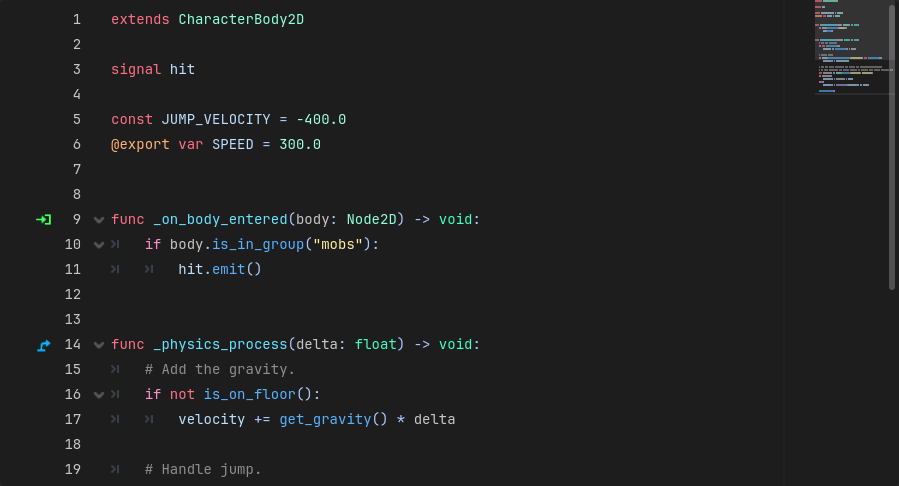
Vùng viết code là nơi bạn gõ script nếu đang dùng trình soạn thảo văn bản tích hợp. Nó cung cấp các tính năng tô sáng và tự động hoàn thành để hỗ trợ bạn khi viết code.
Vùng viết code hiển thị số dòng ở bên trái. Bên dưới các mũi tên điều hướng ở bên phải có một minimap có thể nhấp được, cung cấp cái nhìn tổng quan về toàn bộ script và cho phép bạn cuộn qua nó.
Nếu một dòng code đủ dài (mặc định là hơn 80 ký tự), trình soạn thảo văn bản sẽ hiển thị một đường kẻ dọc có thể dùng làm đường hướng dẫn mềm. Với đường hướng dẫn cứng, giá trị này mặc định là 100 ký tự. Cả hai giá trị đều có thể thay đổi, hoặc bạn có thể bật/tắt việc hiển thị đường kẻ trong cài đặt "Appearance" của trình soạn thảo văn bản.
Trong script, ở bên trái các định nghĩa hàm, bạn có thể thấy thêm một số biểu tượng. Biểu tượng cho biết hàm này là một bản ghi đè của một hàm có sẵn. Nhấp vào nó sẽ mở tài liệu của hàm gốc. Biểu tượng
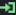
nghĩa là đây là phương thức nhận của một signal. Nhấp vào nó sẽ cho biết signal đến từ đâu. Biểu tượng ở bên trái dòng biểu thị một khối có thể thu gọn. Bạn có thể nhấp để thu gọn hoặc mở rộng nó. Ngoài ra, bạn cũng có thể nhấp vào biểu tượng dấu ba chấm (...) để mở rộng một khối đã thu gọn.Ví dụ dưới đây tóm tắt đoạn văn trên. Các dòng 52, 56 và 58 là các khối có thể thu gọn, dòng 57 là một vùng code có tên "New Code Region," mà bạn cũng có thể thu gọn, và dòng 62 là một khối đã được thu gọn. Dòng 53 là một bookmark, có thể nhảy đến nhanh bằng menu Go To > Bookmarks. Dòng 55 là một breakpoint có thể dùng khi gỡ lỗi.
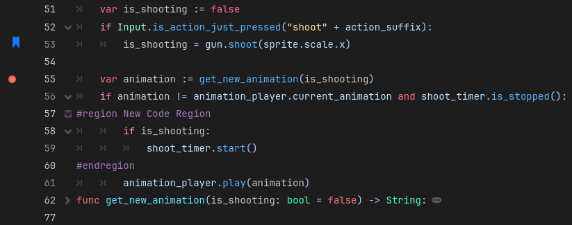
Nhiều màu sắc của trình soạn thảo văn bản như màu tô sáng, hay thậm chí màu biểu tượng breakpoint hoặc bookmark đều có thể tùy chỉnh. Bạn có thể thử nghiệm với chúng bằng cách mở cài đặt trình soạn thảo văn bản và đi đến mục Editor > Editor Settings > Text Editor.